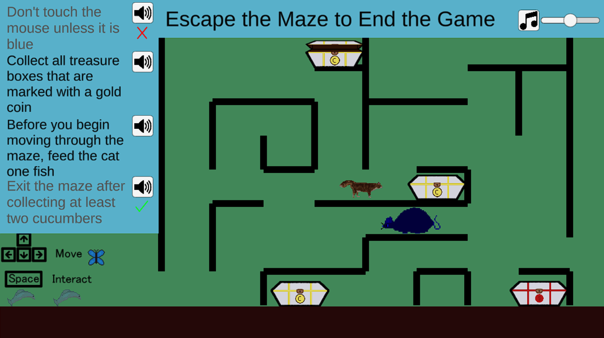

BS in computer science from Georgia Tech.
In 2022-2023, I completed a year of graduate coursework for an MA in game design at American University. After this first year, I decided to pursue independent projects and begin my job search.
This simple maze game was designed through a collaboration with a psychology professor who wanted to showcase how Universal Design for Learning (UDL) principles can be easily implemented to support performance.
This is some C++ code from an Unreal Engine 5 project I created as part of an online Udemy course on C++/UE5.
This is a collection of what I worked on during my first graduate semester at American University.
These are the Unity Engine projects that I worked on in my graduate game development course.
This is a github link that contains games I worked on during undergrad that require downloads to play.
After the Flood is a game a team of us made for Apocalypse Game Jam 2022 over the course of a week, which won 2nd place. I worked on the scripting and Unity Development during this project.
This project showcases work over a semester where I learned and used various art techniques such as rotoscoping, particle effects, and animation.